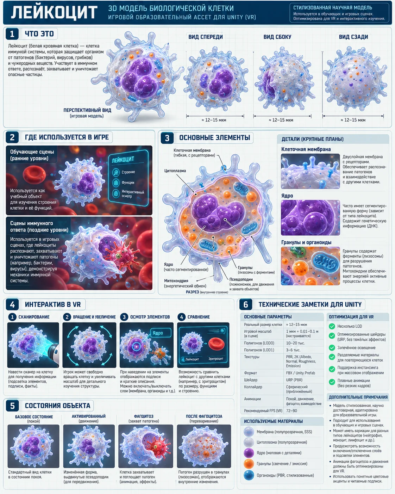

Клетка · preset
Лейкоцит
Базовая иммунная клетка.

Роль в проекте
Используется в: 03 — Артерия — знакомство с кровью, 09 — Вирусная волна, 18 — Финальный отчёт
Рекомендации для Unity
- Prefab с LOD
- ScannerTarget
- XR Grab только в учебной зоне
- FlowFollower/анимация движения
- Состояния через Animator/BlendShapes